DOCUMENTAÇÃO TÉCNICA
Arquitetura do Scheduler com Microsoft 365
Documentação técnica do projeto de agendamento com Python, FastAPI, Microsoft Graph API, Outlook Calendar e Supabase.
Visão Geral
Este projeto demonstra um fluxo real de agendamento usando uma página de portfolio como frontend, uma API Python/FastAPI como backend, Microsoft Graph para integração com Outlook Calendar e Supabase para persistência dos registros.
Diagrama da Arquitetura
Fluxo completo do agendamento, criação do evento no Outlook, persistência no Supabase e cancelamento seguro.
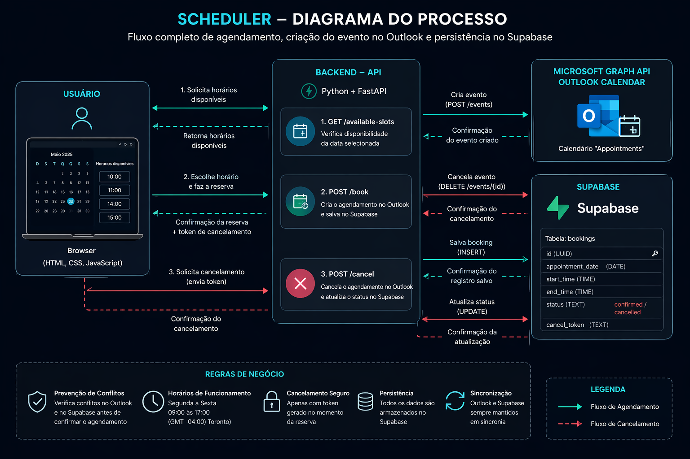
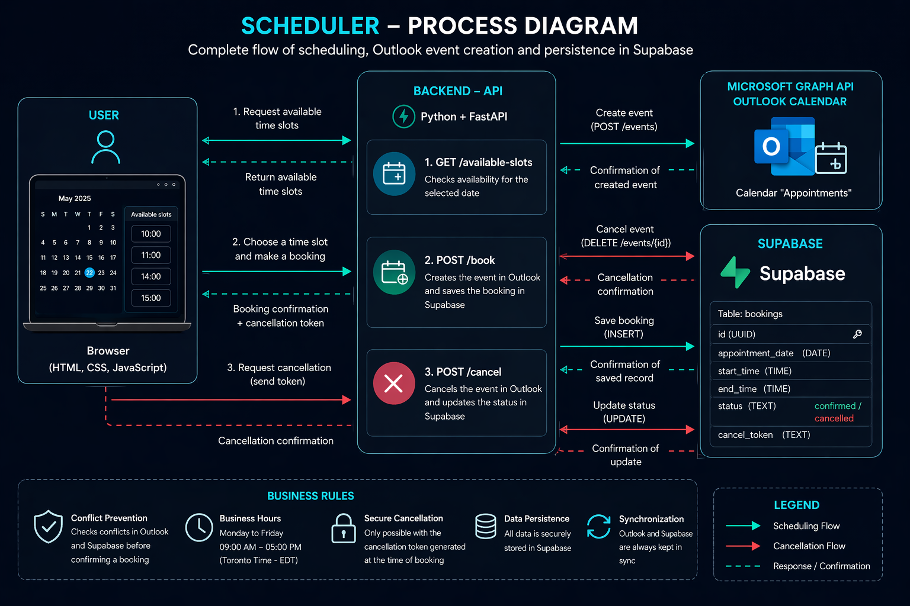
Componentes Principais
- Frontend estático com HTML, CSS e JavaScript
- Backend com Python e FastAPI
- Microsoft Graph API para integração com Outlook Calendar
- Supabase para armazenar bookings e tokens
- Cancelamento seguro usando token
Funcionalidades
- Consulta de horários disponíveis
- Criação de appointments no Outlook
- Validação contra horários duplicados
- Bloqueio de finais de semana
- Cancelamento e liberação do horário
Página Demo
Interface usada para selecionar datas, visualizar horários disponíveis, criar reservas e cancelar appointments.
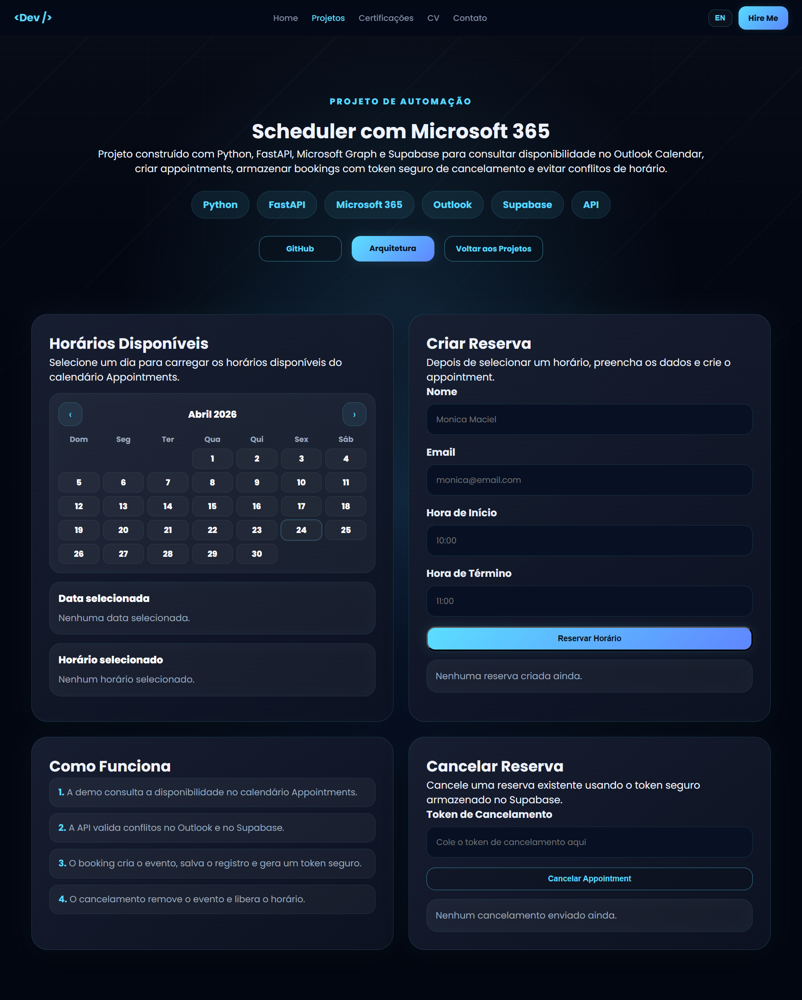
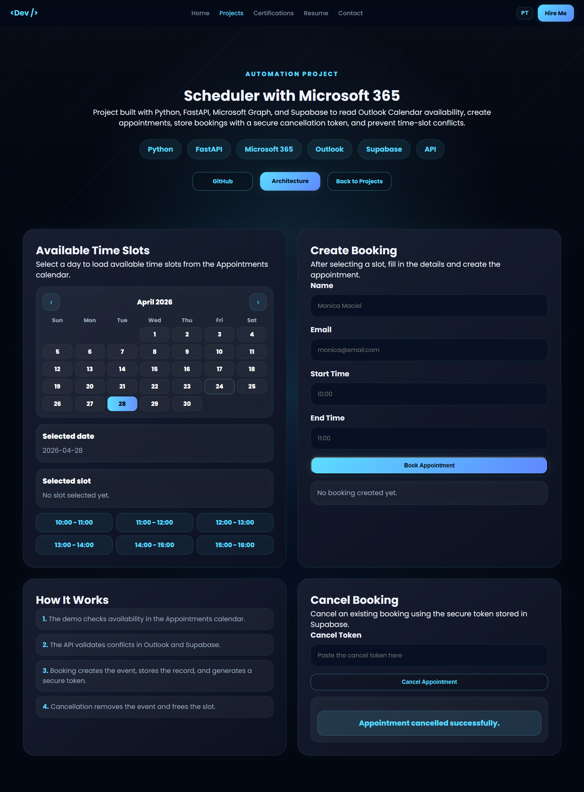
Horários Disponíveis
Após selecionar uma data, a API retorna somente horários disponíveis, evitando conflitos com bookings existentes.
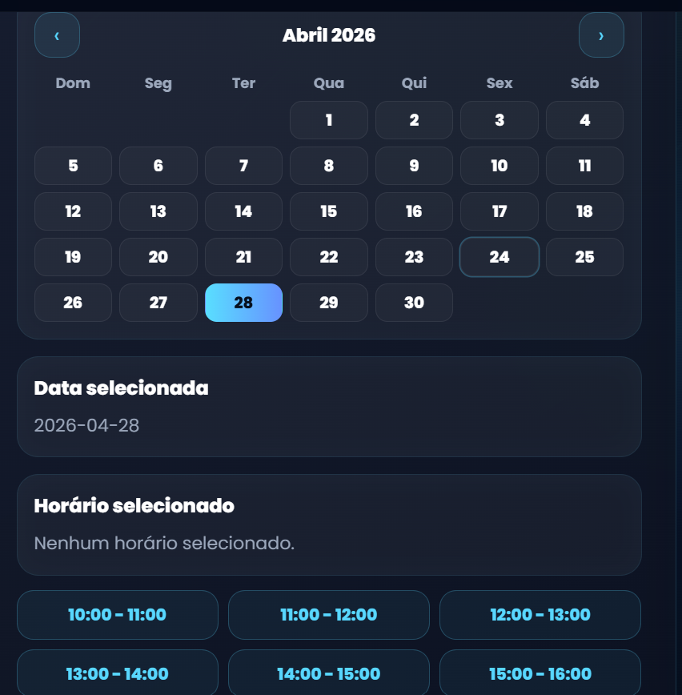
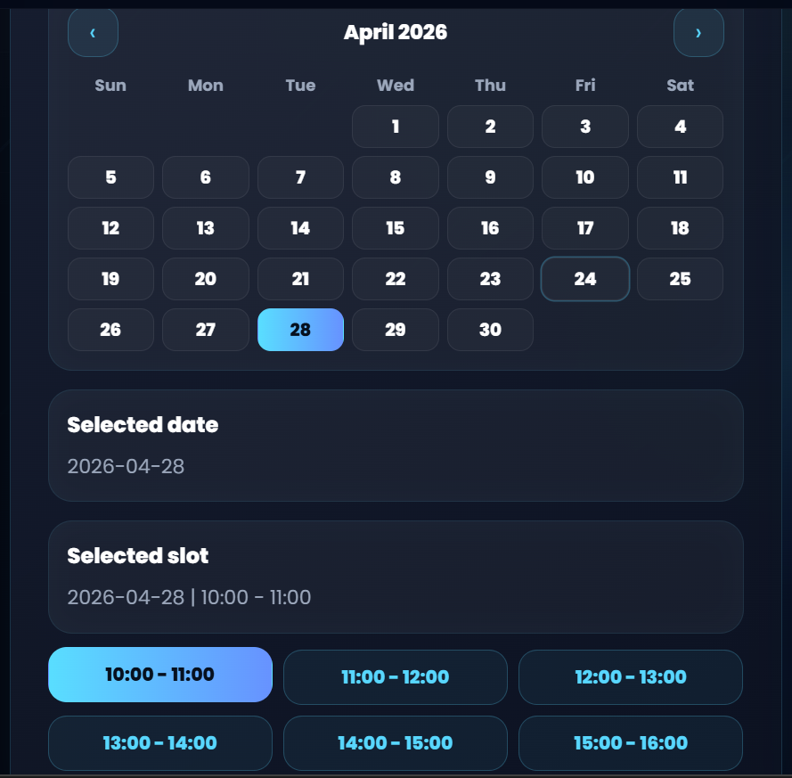
Booking Criado
Confirmação visual da reserva criada com sucesso e token de cancelamento gerado.
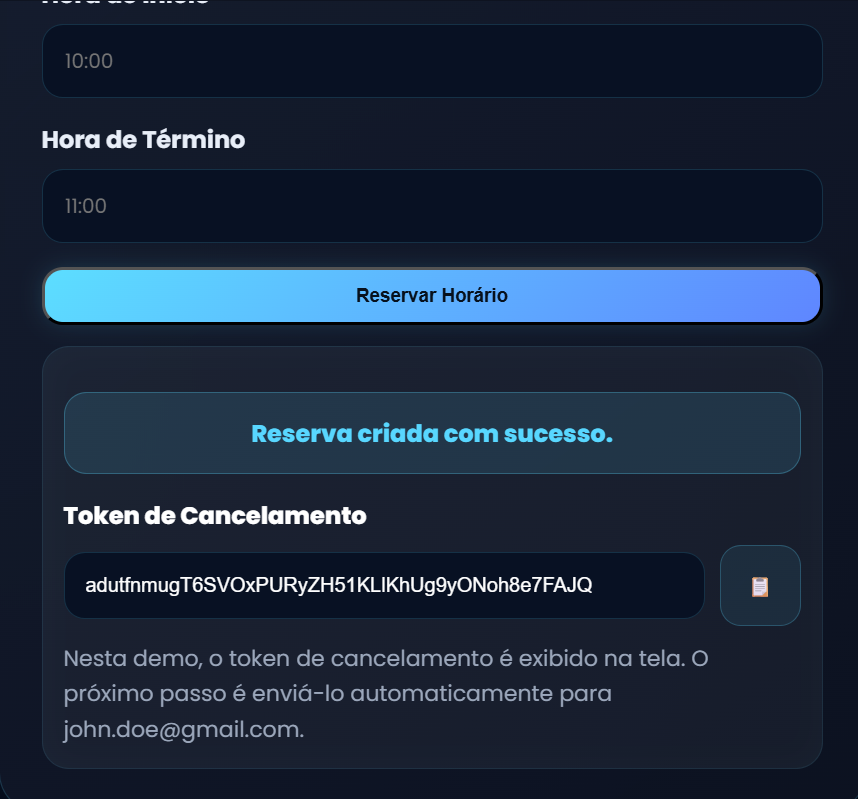
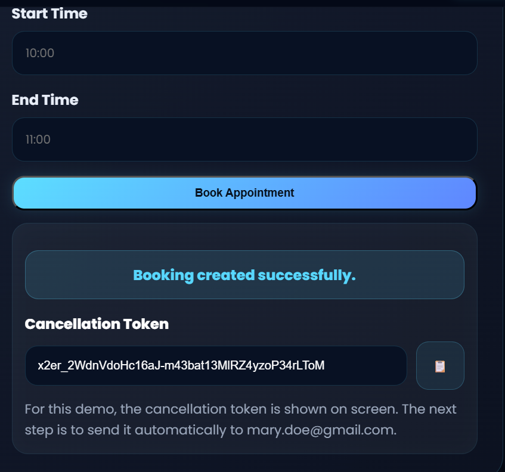
Cancelamento
Cancelamento realizado com token seguro, removendo o evento do Outlook e atualizando o status no Supabase.
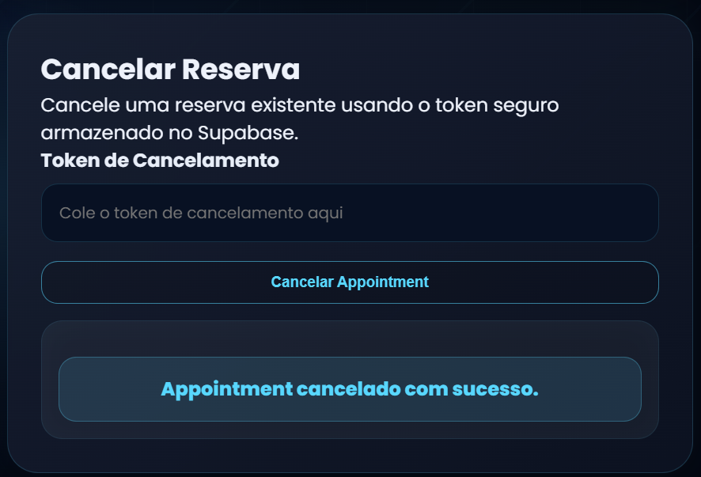
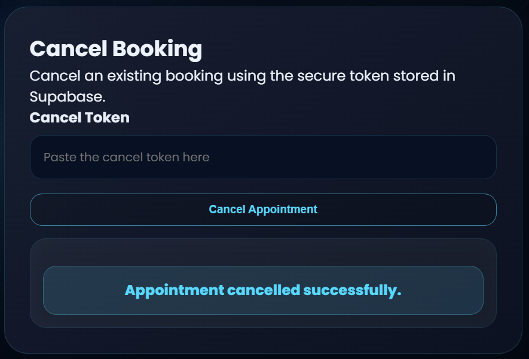
Outlook Calendar
Evento criado no calendário Appointments usando Microsoft Graph API.
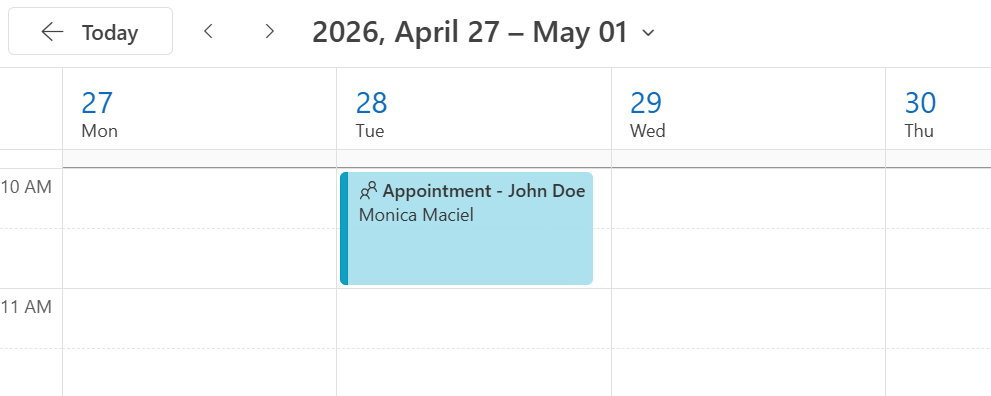
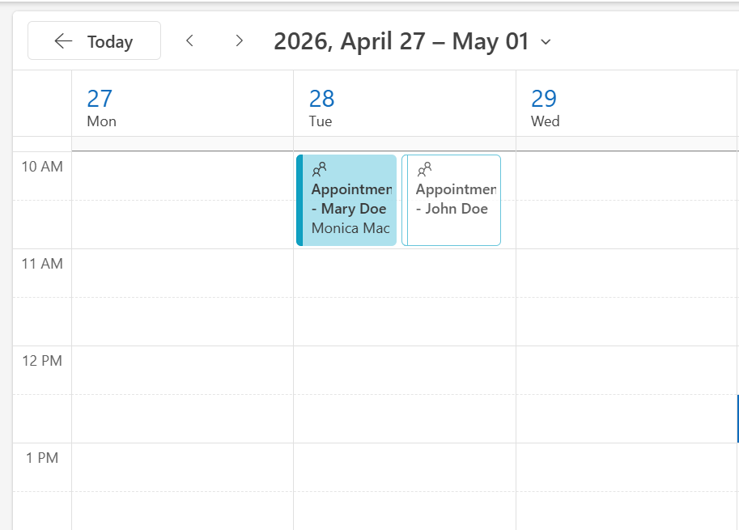
Supabase Bookings
Tabela bookings armazenando data, horário, status, token de cancelamento e referência do evento.
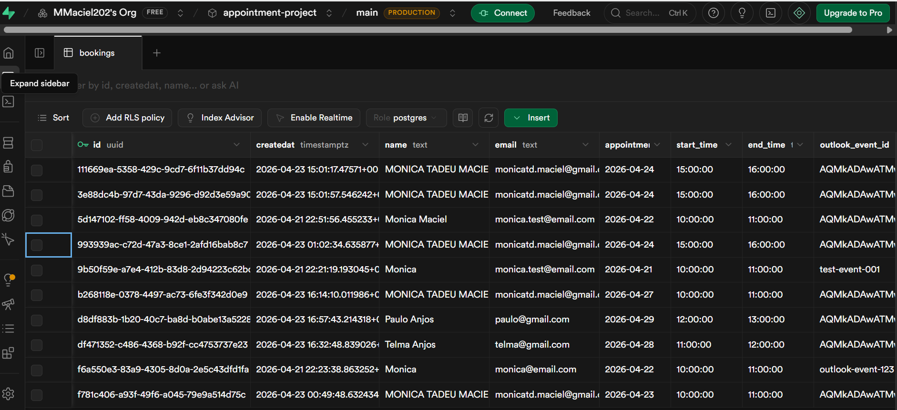
API em Execução
Terminal mostrando a API FastAPI rodando localmente com Uvicorn.
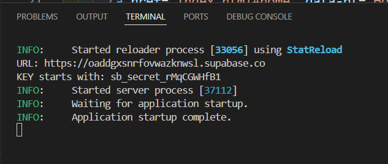
Estrutura do Projeto
Organização do projeto Python com separação entre rotas, serviços, database e scripts.
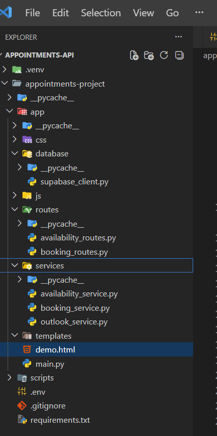